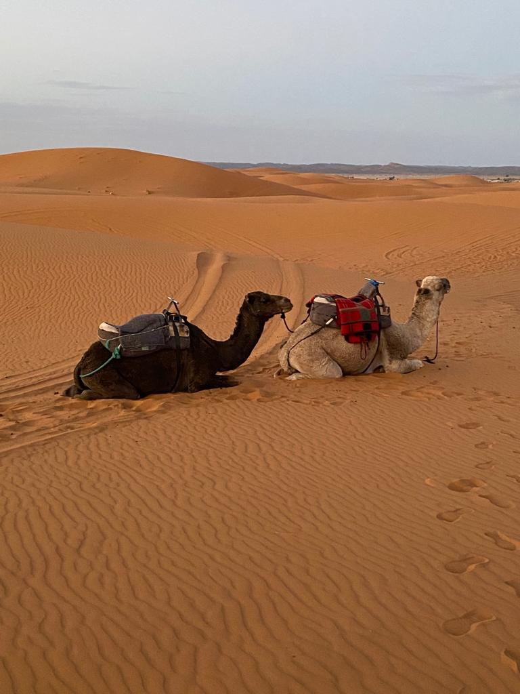

Marrakech, a city located in the western part of Morocco, is a vibrant and colorful destination that offers a unique blend of history, culture, and adventure. Recently, I had the opportunity to visit Marrakech for one week and I want to share with you my experience and tips on how to make the most out of your trip.
Explore the City
First, the city of Marrakech is a maze of narrow streets, souks (markets), and riads (traditional Moroccan houses). The main attraction in the city is the Bahia Palace, a 19th-century palace that showcases the opulence of the Moroccan aristocracy. Another option to see is the Koutoubia Mosque, the largest mosque in Marrakech, and the Saadian Tombs, where the members of the Saadian dynasty are buried. You can check out my video on the Bahia Palace for more information.
Next, take a stroll through the souks and experience the hustle and bustle of the markets. You will find everything from spices, textiles, ceramics, and traditional clothing. Be prepared to haggle and negotiate prices, as it's expected in the souks. In my video on the souks of Marrakech, you can see more of what to expect.
Finally, I would recommend visiting the Majorelle Garden, a beautiful garden designed by the French painter Jacques Majorelle. The garden is a tranquil oasis in the middle of the city, and it's a great place to relax after a busy day of sightseeing.
Experience the Sahara Desert
One of the highlights of my trip was spending a night in the Sahara desert. I highly recommend taking a tour that includes a camel ride to the desert camp, where you can witness the stunning sunset and sunrise over the dunes. At night, you can enjoy a traditional Berber dinner and music around the campfire. You can also try sandboarding, which is a fun activity in the desert. The round-trip to the desert took me 3 days. You can check out my video on my desert adventure here.

Visit the Ouzoud Falls
If you have an extra day, I highly recommend visiting the Ouzoud Falls (about three hours drive from Marrakech), one of the most beautiful waterfalls in Morocco. The falls are located in the Atlas Mountains and are a popular spot for swimming and picnicking. The falls are 110 meters tall and are surrounded by lush greenery, making it a perfect place to escape the heat of the city. You can also take a boat ride on the river below the falls and see the fish and monkeys. The trip to the falls is a great opportunity to experience the natural beauty of Morocco. You can check out my video on them here.
Places to Stay
When it comes to places to stay, there are many options available in Marrakech. From traditional riads to modern hotels, you can find something that fits your budget and preferences. Some options to consider include:
- Riad Dar Palmyra: A traditional riad located in the heart of the medina, this property features a rooftop terrace with views of the city.
- Riad Jomana: Anothe riad located in the Old Medina, this property features a rooftop pool and spa.
- Hotel Ibn Batouta: A charming hotel located in the heart of the medina, this property features a courtyard garden and a rooftop terrace with views of the city.
Dining
When it comes to dining, Marrakech offers a wide variety of options for every budget and you can easily get by spending around 15€ per day. For a cheap and delicious option, head to Kech Burger (located in the Gueliz district) for some of the best burgers in the city. Another cheap and casual option is Kafe Merstan (located in the Medina), which serves traditional Moroccan dishes in a casual setting. Another great option is Mamma Mia (located in the Medina) which serves delicious Italian food in a cozy atmosphere. For a more fancy option, check out Nomad restaurant (located in the Medina) which serves a mix of Moroccan and international dishes in a luxurious setting.
Budget
In total, we spent about 300 euros per person for 2 people. This includes transportation in Morroco and flights (27€ round-trip from Lisbon), the desert tour (95€ per person), entrance fees to monuments, and food! So, as you can see, it is quite affordable. Traveling doesn't have to be expensive!
Additional Tips
When it comes to currency (Moroccan Dirham), the best way to get cash is using a Revolut card and withdrawing from an ATM. Revolut is a great option for travelers as it has no foreign transaction fees and it is widely accepted. However, it is possible to pay with euros in most places, as you can convert roughly as 1€ = 10MAD, although most of the time you will be overpaying. We used the XE app to check exchange rates.